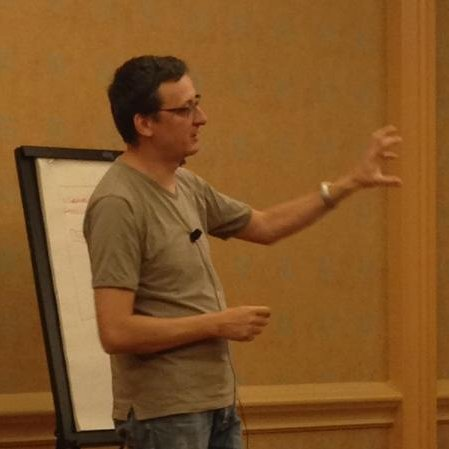

Microservices Lifecycle
Created by Viktor Farcic for Technology Conversations / @vfarcic
Viktor Farcic
-

- Software Architect at Everis
- Never developed in Fortran
- Passionate about microservices, continuous delivery, TDD, and BDD
- Blogger in Technology Conversations and speaker at conferences
- Java Test-Driven Development: Mastering TDD Through Katas
History of the Failed Initiatives
Continuous Integration (CI), Delivery and Deployment (CD)
- Integration phase = Dante's Infierno
- eXtreme programming (XP)
- Architecture
- Testing
- Orchestration
- Deployments
Things in Common
- Domain-driven design
- Continuous delivery
- Containers
- Small autonomous teams
- Scalable systems
Continuous deployment
- Continuous integration
- Continuous delivery
- Continuous deployment
Containers
Shipping container is an object for holding or transporting something
- Isolated
- Immutable
- Reliable
- Self-sufficient
- Scalable
Monolithic applications
- Single unit
- Time increases complexity and size
- Time decreases development, testing and deployment speed
- Layers
- Change is hard and with risks
- Scaling = multiplication of entire application
Microservices
Applications that fit into a screen
- System composed of small services
- Autonomy/independence
- Data exchange through APIs
- Bounded context
Object-Oriented Design
The big idea is 'messaging'. The key in making great and growable systems is much more to design how its modules communicate rather than what their internal properties and behaviors should be.- Alan Kay
Single Responsibility Principle
Gather together those things that change for the same reason, and separate those things that change for different reasons- Robert C. Martin
Linux = Microservices
ps aux | grep jav[a] | awk '{print $2}' | xargs kill
Microservices
Key Aspects
- One thing or one functionality
- Any tools or languages
- Truly loosely coupled
- Teams independence
- Easier testing and CD
- Decentralization
Microservices
Disadvantages
- Increased operational and deployment complexity
- Configuration Management
- Containers (Docker)
- Work shifted from development to DevOps
- Remote process calls
Microservices
Advantages
- Scaling
- Resilience / fault isolation
- Innovation
- Size
- Decoupling
- Deployment
- No need for long term commitment
Microservices
Best Practices
- Containers (Docker)
- Reverse proxy
- Minimalist approach
- CM is a must
- Cross functional teams
- API versioning
Deployment
- Big vs small
- Mutable vs immutable
Deployment
Mutable Monster Server

Deployment
Immutable Server

Deployment
Immutable Server

Deployment
Immutable Server

Deployment
Immutable Server

Deployment
Immutable Micro Services

Deployment
Immutable Micro Services

Deployment
Immutable Micro Services

Deployment
Immutable Micro Services

Deployment
Immutable Micro Services

Deployment
Immutable Micro Services

Deployment
Immutable Micro Services Details

Deployment
Immutable Micro Services Details

Deployment
Immutable Micro Services Details

Deployment
Immutable Micro Services Details

Deployment
Immutable Micro Services Details

Development Environment
- Vagrant
- Docker
Development Environment
Create Virtual Machine
git clone https://github.com/vfarcic/books-ms.git
cd books-ms
vagrant plugin install vagrant-cachier
vagrant up dev
Development Environment
Vagrantfile
Vagrant.configure(VAGRANTFILE_API_VERSION) do |config|
config.vm.box = "ubuntu/trusty64"
config.vm.synced_folder ".", "/vagrant"
config.vm.provider "virtualbox" do |v|
v.memory = 2048
end
config.vm.define :dev do |dev|
dev.vm.provision :shell, path: "bootstrap.sh"
dev.vm.provision :shell,
inline: 'ansible-playbook \
/vagrant/ansible/dev.yml -c local -v'
end
if Vagrant.has_plugin?("vagrant-cachier")
config.cache.scope = :box
end
end
Development Environment
Inside Virtual Machine
vagrant ssh dev
ansible --version
docker --version
docker-compose --version
cd /vagrant
ll
Development Environment
Front-end tests
sudo docker run -it \
-v $PWD/client/components:/source/client/components \
-v $PWD/client/test:/source/client/test \
-v $PWD/src:/source/src \
-v $PWD/target:/source/target \
-v /data/tests/db:/data/db \
-p 8080:8080 \
--env TEST_TYPE=watch-front \
vfarcic/books-ms-tests
Development Environment
Tests with Docker Compose
sudo docker-compose -f docker-compose-dev.yml up feTests
sudo docker-compose run tests
Development Environment
Stop the VM
exit
vagrant halt dev
Deployment Pipeline
- Checkout the code
- Run pre-deployment tests
- Compile and/or package the code
- Build the container
- Push the container to the registry
- Deploy the container to the production server
- Run post-deployment tests
Deployment Pipeline
Creating CD VM
cd ../
git clone https://github.com/vfarcic/ms-lifecycle.git
cd ms-lifecycle
vagrant up cd
vagrant ssh cd
Deployment Pipeline
Checking out the code
git clone https://github.com/vfarcic/books-ms.git
cd books-ms
Deployment Pipeline
Running pre-deployment tests and compiling and/or packaging the code
sudo docker-compose -f docker-compose-dev.yml run --rm tests
ll target/scala-2.10/
Deployment Pipeline
Building Docker containers
cat Dockerfile
sudo docker build -t vfarcic/books-ms .
Deployment Pipeline
Running containers (Docker)
Docker
sudo docker run -d --name books-ms-db mongo
sudo docker run -d --name books-ms \
-p 8080:8080 \
--link books-ms-db:db \
vfarcic/books-ms
sudo docker exec -it books-ms bash
env | grep DB
exit
sudo docker ps -a
sudo docker logs books-ms
sudo docker rm -f books-ms books-ms-db
sudo docker ps -a
Deployment Pipeline
Running containers
Docker Compose
sudo docker-compose -f docker-compose-dev.yml up -d app
cat docker-compose-dev.yml
sudo docker-compose ps
sudo docker ps -a
sudo docker-compose logs app
Deployment Pipeline
Running containers
cURL
curl -H 'Content-Type: application/json' -X PUT -d \
'{"_id": 1,
"title": "My First Book",
"author": "John Doe",
"description": "Not a very good book"}' \
http://localhost:8080/api/v1/books | python -mjson.tool
curl -H 'Content-Type: application/json' -X PUT -d \
'{"_id": 2,
"title": "My Second Book",
"author": "John Doe",
"description": "Not a bad as the first book"}' \
http://localhost:8080/api/v1/books | python -mjson.tool
curl -H 'Content-Type: application/json' -X PUT -d \
'{"_id": 3,
"title": "My Third Book",
"author": "John Doe",
"description": "Failed writers club"}' \
http://localhost:8080/api/v1/books | python -mjson.tool
curl http://localhost:8080/api/v1/books | python -mjson.tool
curl http://localhost:8080/api/v1/books/_id/1 | python -mjson.tool
Deployment Pipeline
Pushing containers to the registry
sudo docker tag vfarcic/books-ms 10.100.198.200:5000/books-ms
sudo docker push 10.100.198.200:5000/books-ms
Deployment Pipeline
Checkout the codeRun pre-deployment testsCompile and/or package the codeBuild the containerPush the container to the registry- Deploy the container to the production server
- Run post-deployment tests